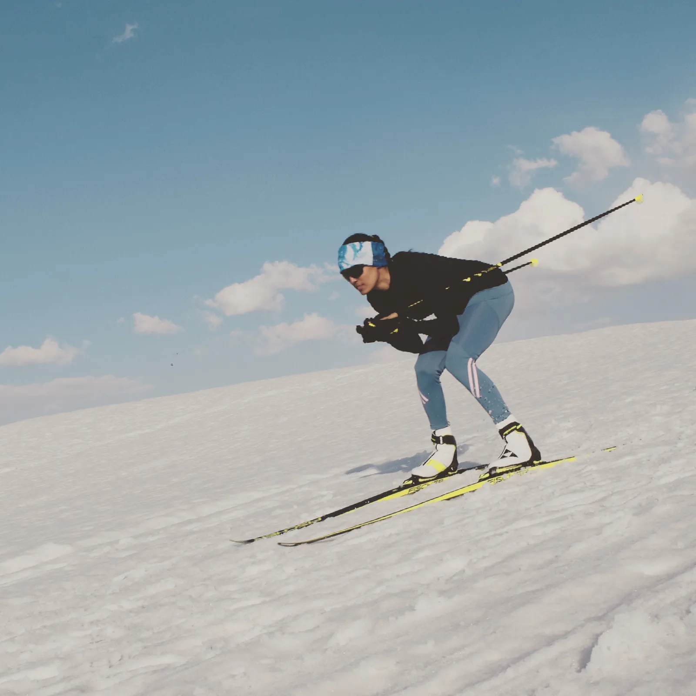

Resilience
Most of the work happens before anyone is watching. She reached a World Cup start line from a place with no snow, and can show a room how to keep moving when nothing yet confirms it is working.
Corporates and leadership programmes